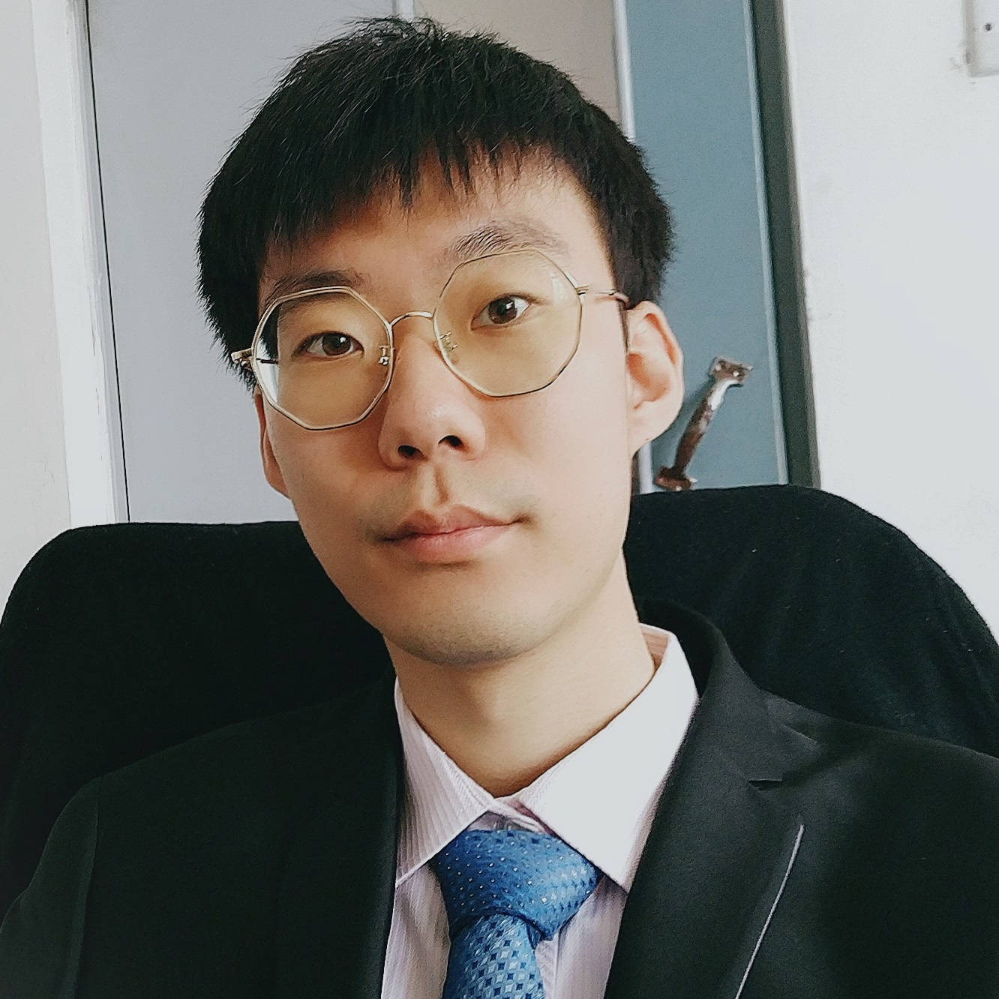

Junbo Zhang
|
 |
Junbo Zhang is a second year Ph.D student in Electrical and Computer Engineering at Carnegie Mellon University. He is a wireless communication and mobile systems researcher advised by Prof. Swarun Kumar. His research at the WiTech Lab focusses on developing solutions for ultra low-power and battery-free wireless. His work has been published at premier venues in wireless communications and networks such as MobiCom and NSDI. In his spare time, he likes singing and playing guitar. Check out Junbo's website [here].
|
Can you tell me about your research interests and focus?
My research interests lie broadly in wireless systems -- trying to play with radio signals in a creative way. This includes wireless sensing systems, sensor networks, battery-free IoT devices, you name it. As we step into the era of 5G, Wi-Fi 6 and IoT, wireless signals become an indispensable part of our daily life. My first projects, as a young man who just got fascinated by the magic of wireless signals, were PushID and IntuWition, which I engaged in during my summer internship at WiTech back in 2018. As a brand-new PhD student, I explored LP-WAN a little bit -- enabling energy-efficient aggregates of sensory readings from LP-WAN clients (Joltik), and I got my hands busy with NFC -- a small project relevant is NoFaceContact (of course, more to come). Given the opportunity, I might also explore a little bit about (Security and Privacy for Wireless Networks) in the near future. Do you find my story eclectic? Well, a good story should not only be comprehensive, but also rich regarding its "main theme" (or, we can call that a "thesis"), and that is exactly what I am going to work on in my next few years.
What are the research accomplishments that you are most proud of?
I was about to mention my experiences for PushID when Jingxian and I had quite a number of days like this: moving tens of thousands of dollars worth equipments to the CIC garage, spending the whole day collecting data with various fellow CMU students passing by and asking questions and then processing them into midnight. Yet, we are now in 2020, and nothing could be more disruptive than this worldwide COVID-19 pandemic. Therefore, I want to mention my experiences from March to May, when I was working together with Jingxian on another project. Another tens of thousands of dollars worth equipments, whole bunches of messy wires and antennas, bulky oscillators and power supplies, as well as the magic (namely expertise, sweat, patience, patience and patience) to make them into a coherent system. I built (or more precisely, re-built) the whole system in my home -- a small room in a 5B3B house. I literally woke up and slept along with "my dear devices", did a whole bunch of experiments and we made it before the deadline together. Personally, that was an impressive accomplishment in this ultimately tough year.
Can you tell me about the work culture and environment at CMU?
If I am to use a single word to conclude, I would choose freedom -- students can explore the sea of knowledge however they want. I think most professors here are very nice (of course, especially Swarun) in that they heuristicly motivate their students by encouraging them to explore their real interests. They hardly act as an enforcer, forcing students to finish specific tasks; instead, they are like railroad switch operators that help students achieve their goals in the most efficient and fruitful way. With the rich recources (teachers, fellow students, equipments, lab spaces, you name it) here at CMU, students here are confident that they can make an impact in their own field. Thoughout the process of doing projects, students are not only getting the projects themselves, but also building their confidence, expertise and self-motivation. It is so nice to be a member in this community.
Can you share a little known fact about yourself?
Music is definitely an indispensable part of my life. I might have enrolled in musical engineering or even a music school in a parallel universe. I can play some guitar, I enjoy singing a lot, and I have even composed songs. Yet, the more I try, the more ignorant I feel I am. Therefore, I have a long list of what I want to learn systematically in my spare time: how to sing correctly, how to play the piano as a beginner, how to compose a song in a good manner. Life is still long, and I will furfill this list some day.